بوابة الشركاء هي مكان عملك اليومي: الطلبات التي أُسندت إليك، المخزون الذي تملكه، ما استلمته من المصنع، وما تدين به. أنت ترى بياناتك فقط.
الدورين
الوكيل
الموزع
يستلم البضاعة من
المصنع مباشرة
وكيله
يخدم الطلبات
نعم
نعم
يرى تبويب «الموزعون»
نعم
لا
طلبات التوريد
يستقبلها من موزعيه ويقرر
يرسلها إلى وكيله
يدفع للمصنع
نعم، عند كل استلام
يسوّي مع وكيله
الدخول
أدخل رقم هاتفك وكلمة المرور في صفحة تسجيل الدخول.
تفتح صفحة اليوم. القائمة الجانبية على اليمين؛ على الهاتف تصبح شريطًا سفليًا.
الجرس في الأعلى يعرض تنبيهاتك (طلب جديد، طلب متأخر، صنف نفد…). تختار ما يصلك منها في الإعدادات.
لا تستطيع إنشاء منتج أو تعديل سعر؛ الكتالوج تديره الإدارة. أنت تُدخل فقط الكميات التي تملكها من كل مقاس.
2. اليوم /partner
الصفحة تجيب على «ماذا أفعل الآن؟». كل صف له إجراء واحد واضح.
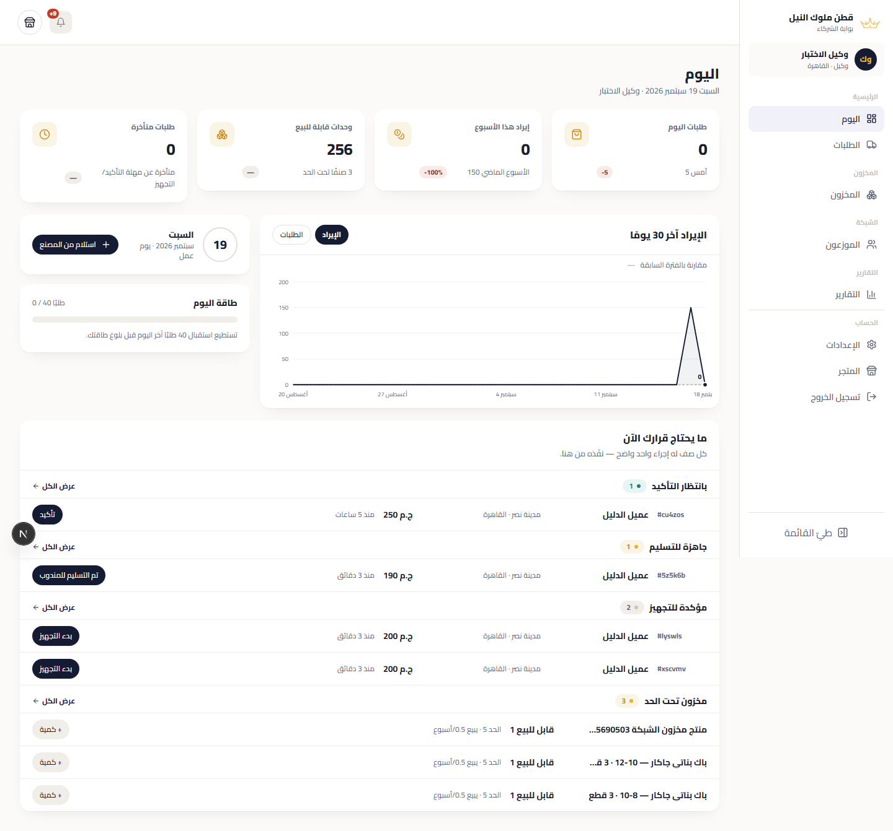
اليوم: أربع بطاقات أرقام، طاقة اليوم، رسم 30 يومًا، ثم طابور «ما يحتاج قرارك الآن».
الأرقام
طلبات اليوم مقارنة بالأمس. إيراد هذا الأسبوع مقارنة بالأسبوع الماضي.
وحدات قابلة للبيع: كل ما تملكه ناقص المحجوز للطلبات المفتوحة، وعدد الأصناف تحت حد التنبيه.
طلبات متأخرة: تجاوزت مهلة التأكيد أو التجهيز المحددة لك.
الطاقة والتقويم
«طاقة اليوم» تقارن الطلبات المؤكدة اليوم بالحد اليومي الذي ضبطته في الإعدادات؛ للمعلومة فقط، لا يُمنع شيء. في يوم غير يوم عمل يُذكر ذلك. زر استلام من المصنع يفتح نموذج استلام جديد مباشرة.
الطابور
المجموعة
الإجراء
بانتظار التأكيد
«تأكيد»: تصبح ملزمًا بالطلب ويُحجز مخزونه.
مؤكدة للتجهيز
«بدء التجهيز».
جاهزة للتسليم
«تم التسليم للمندوب» عندما يخرج الطلب من عندك.
متأخرة
نفس الإجراء التالي، لكنها الأهم.
طلبات توريد
للوكيل: طلبات موزعيك. للموزع: قرارات وكيلك على طلباتك.
مخزون تحت الحد
«+ كمية» لتعديل سريع، أو اطلب من المصنع.
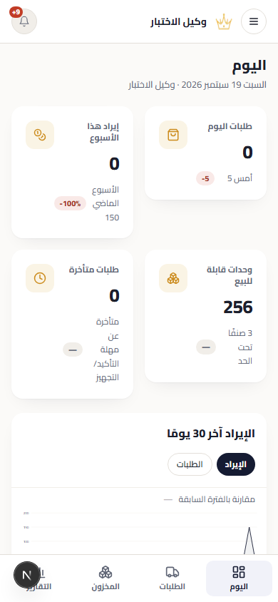
نفس الصفحة على الهاتف.
3. الطلبات /partner/orders
الطلبات: تبويبات المراحل بعدّاداتها، بحث وفلاتر، وزر الحالة التالية على كل صف.
كيف تعمل القائمة
المراحل: بانتظار التأكيد، مؤكد، قيد التجهيز، جاهز للشحن، تم الشحن، تم التسليم، ملغي. اعمل مرحلة مرحلة.
البحث والفلاتر: رقم الطلب أو العميل أو الهاتف، المحافظة، طريقة الدفع، الفترة، «متأخرة فقط».
الحالة التالية على الصف تنقل الطلب خطوة واحدة. لا تستطيع إلغاء طلب من الصف؛ الإلغاء من التفاصيل وبسبب.
التحديد الجماعي: حدّد عدة طلبات ثم «تغيير حالة المحددة» أو «طباعة قائمة التجهيز» أو التصدير لشركة الشحن (الطلبات الجاهزة للشحن فقط).
اكتب الرقم الجديد للمتاح واحفظ الصف، أو استخدم +N / −N لإضافة أو خصم كمية.
لا يمكن أن يقل المتاح عن المحجوز؛ تظهر رسالة توضح ذلك.
كل تعديل يُكتب في الحركات بسبب «تعديل يدوي».
الحركات
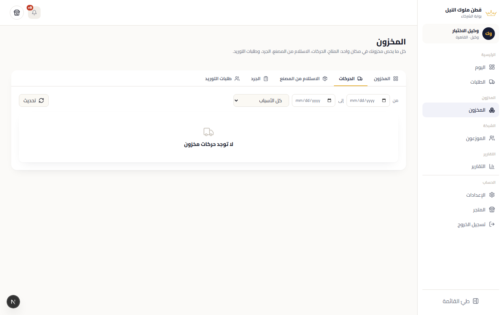
الحركات: دفتر كل ما دخل وخرج، بالفترة والسبب، مع الرصيد الجاري لكل مقاس.
الأسباب: حجز طلب، تنفيذ طلب، إرجاع حجز، تعديل يدوي، استلام من المصنع، جرد، تحويل. هذا هو المرجع عند أي خلاف على رقم.
5. الاستلام من المصنع والجرد /partner/stock/intake · /partner/stock/counts
الاستلام من المصنع
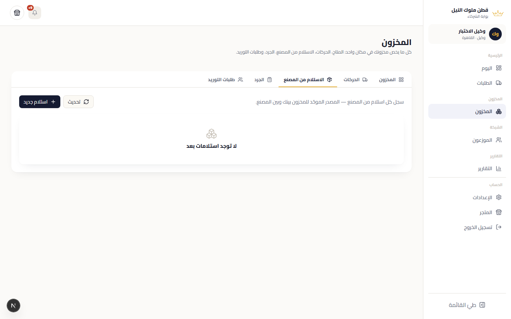
الاستلامات السابقة: التاريخ، عدد القطع، القيمة بنسبة الشراء.
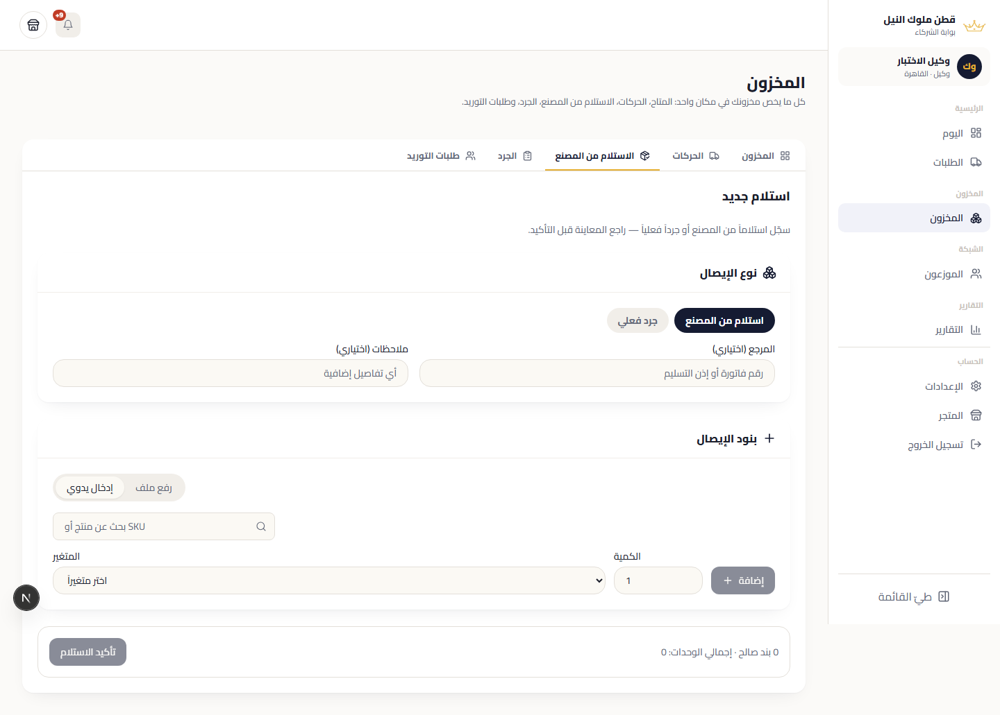
استلام جديد: ابحث عن الكود، أدخل الكمية، وراجع الإجمالي قبل الحفظ.
«استلام من المصنع» ← أضف الأصناف بالكود أو الاسم مع الكمية (أو ارفع ملفًا).
راجع القيمة: عدد القطع × سعر البيع × نسبة الشراء الخاصة بك.
احفظ. يزيد المتاح فورًا، ويُسجَّل الدين على حسابك بنفس القيمة (القسم 10).
الاستلام لا يُعدَّل بعد الحفظ لأنه ينشئ دينًا. راجع الكميات قبل الحفظ.
الجرد
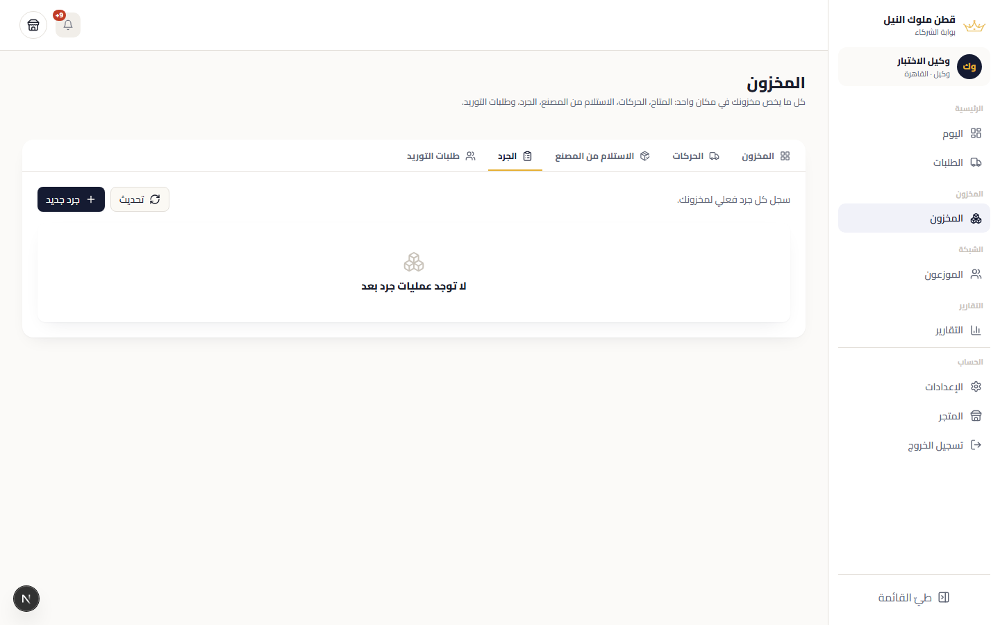
الجرد: تُدخل ما عددته فعليًا، والنظام يسجل الفرق كحركة.
الفرق بين الثلاثة: التعديل يغيّر رقمًا واحدًا بسرعة، الاستلام يضيف بضاعة ويُنشئ دينًا، الجرد يطابق الأرقام بالواقع دفعة واحدة ويسجل الفروق.
6. طلبات التوريد /partner/stock/requests
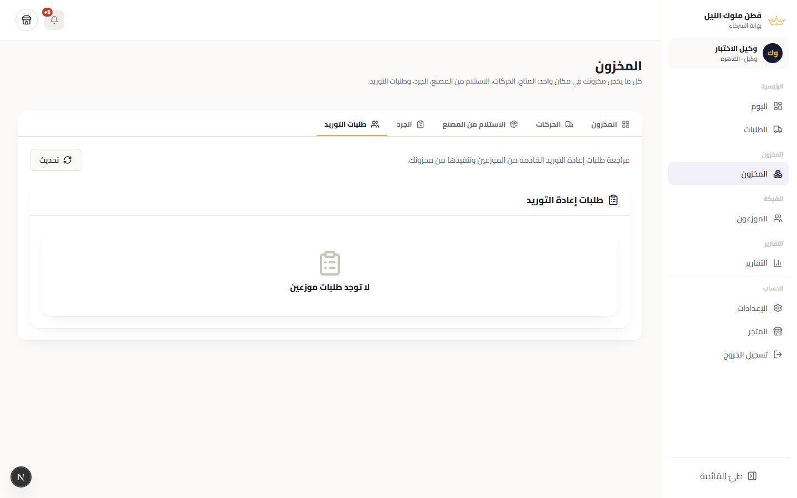
عند الوكيل: طلبات الموزعين، قبول أو رفض أو تنفيذ جزئي.
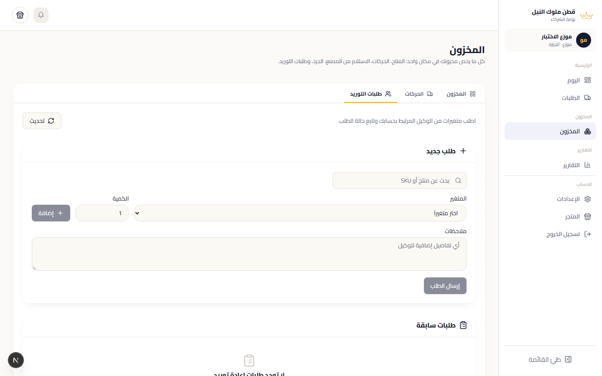
عند الموزع: إنشاء طلب توريد للوكيل ومتابعة حالته.
للموزع
«طلب توريد جديد» ← أضف الأصناف والكميات ← أرسل.
تابع الحالة: بانتظار الرد، مقبول، منفَّذ، مرفوض. عند التنفيذ تنتقل الكمية من مخزون الوكيل إلى مخزونك تلقائيًا.
للوكيل
الطلبات الواردة تظهر هنا وفي طابور اليوم.
اقبل بالكميات المتاحة (يمكن تنفيذ جزء)، أو ارفض بسبب.
7. الموزعون (للوكيل) /partner/network
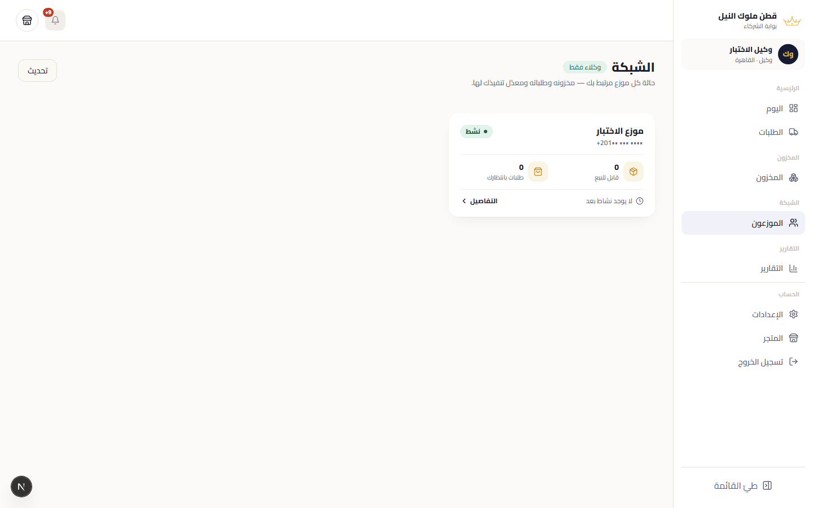
الموزعون: بطاقة لكل موزع بصحته، وتفاصيل مخزونه وطلباته ونسبة التلبية.
لكل موزع: القابل للبيع لديه، الطلبات المعلقة، آخر نشاط، ونسبة تلبية طلباته. افتح البطاقة لترى مخزونه صنفًا صنفًا.
8. التقارير /partner/reports/…
خمسة تقارير، ولكل منها سؤال. اختر الفترة من الشريط؛ كل رقم يُقارن بالفترة المساوية السابقة (السهم الأخضر أو الأحمر).
التقرير
السؤال
الأهم فيه
المبيعات
كم بعت، وهل أنمو؟
الإيراد، الطلبات، القطع، متوسط الطلب، نسبة الإلغاء، والتفصيل بالمنتج والفئة والمحافظة.
التجهيز
ما سرعتي والتزامي؟
وسيط وقت التأكيد والشحن، نسبة التأخر، أبطأ الطلبات.
المخزون
ماذا أطلب، وما الراكد؟
تغطية الأيام لكل مقاس، الأصناف الراكدة، أيام النفاد، ومقترح إعادة الطلب القابل للتصدير بصيغة استلام المصنع.
الشبكة (وكيل)
كيف يعمل موزعوّ؟
مبيعات كل موزع ومخزونه ونسبة تلبية طلباته.
المال
أين أقف مع المصنع ومع النقد؟
ما عليّ للمصنع والمدفوع والرصيد والقسط التالي؛ وما حصّلته من العملاء وما ينتظر التحصيل.
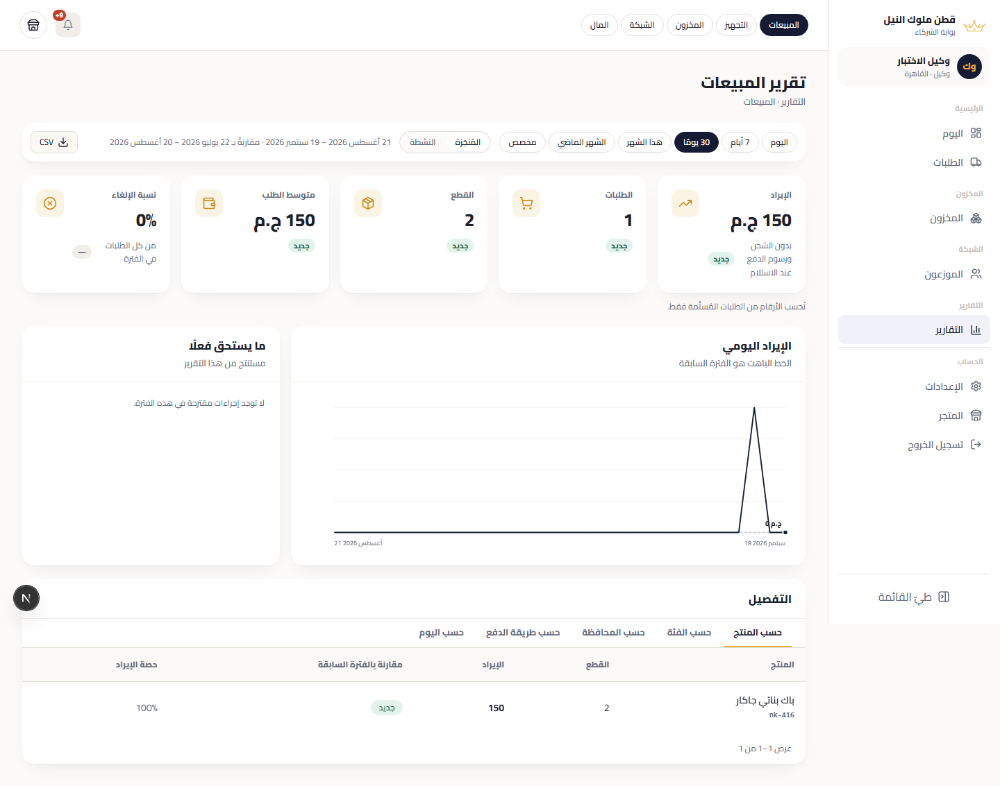
المبيعات: الفترة، ثم «المُنجَزة» / «النشطة»، ثم البطاقات والرسم اليومي والتفصيل.
المُنجَزة (الافتراضي) = الطلبات المُسلَّمة فقط. النشطة = من التأكيد حتى الشحن. غير المدفوع والملغي خارجهما.
الإيراد = قيمة البضاعة بعد الخصم، بدون الشحن ورسوم الدفع عند الاستلام.
كل جدول له تصدير CSV.
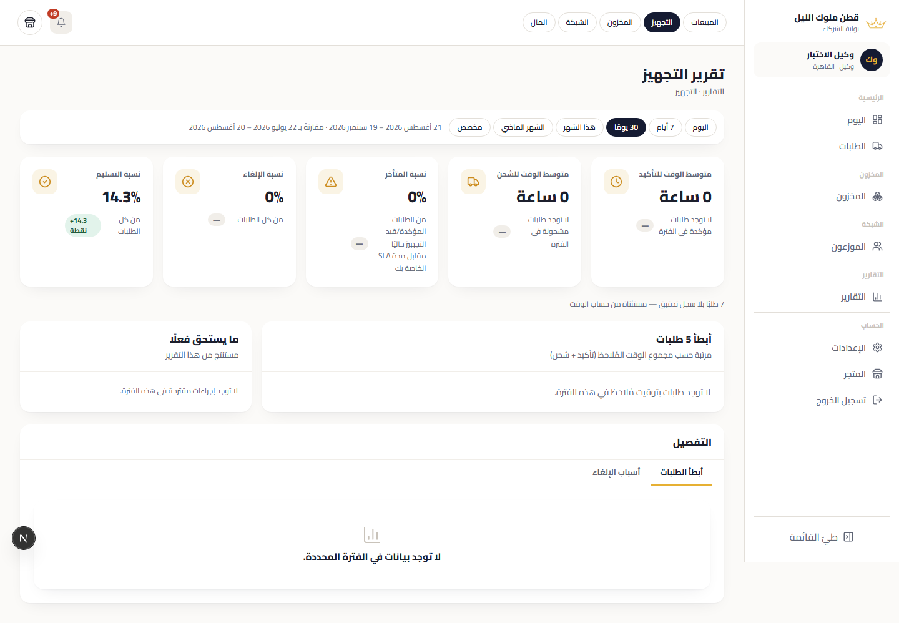
التجهيز.
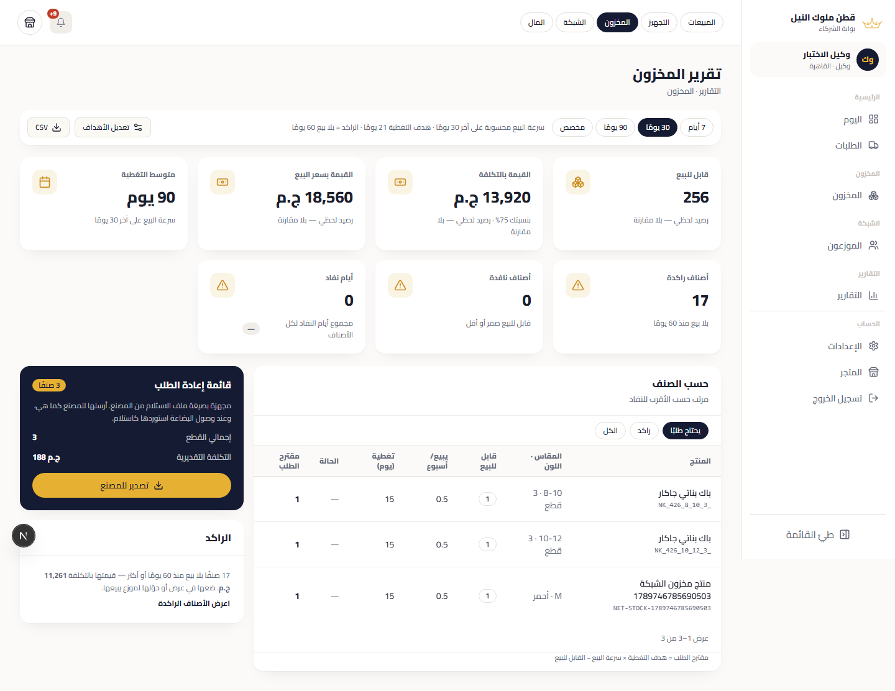
المخزون.
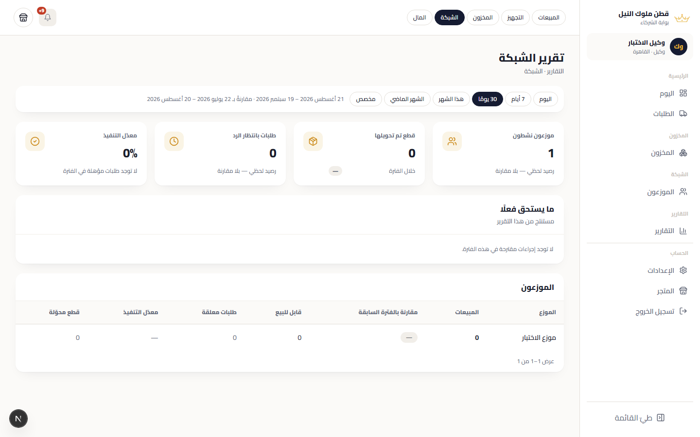
الشبكة (للوكيل).
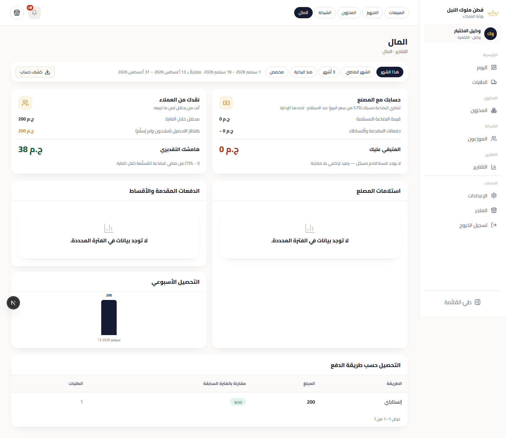
المال.
الرسم البياني: الخط الداكن هو الفترة الحالية، والمتقطع الباهت هو السابقة. مرّر المؤشر لترى القيمتين لأي يوم.
9. الإعدادات /partner/settings
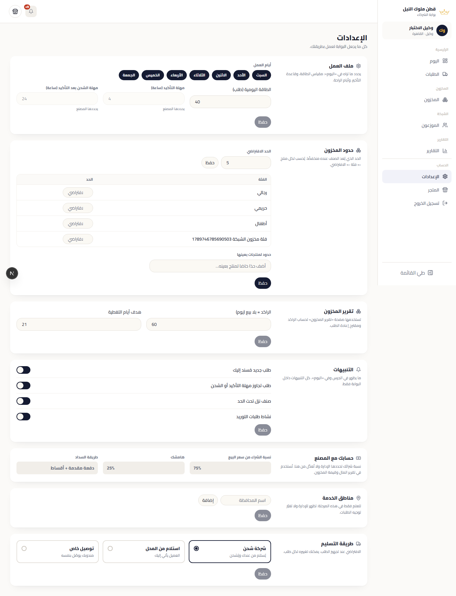
الإعدادات: الملف، التشغيل، التنبيهات، حدود المخزون، وحسابك.
الإعداد
ماذا يفعل
اقتراح
أيام العمل
في غير أيام العمل يُذكر ذلك على صفحة اليوم؛ لا يُمنع شيء.
أيامك الفعلية.
الطاقة اليومية
عداد على صفحة اليوم، ويراه المسؤول.
ما تستطيع تجهيزه فعلًا في يوم.
مهلة التأكيد / الشحن (ساعات)
بعدها يُعدّ الطلب متأخرًا عندك وعند الإدارة.
4 و24 مثلًا.
طريقة التسليم
شركة شحن، استلام من المحل، أو توصيل خاص.
—
حد المخزون المنخفض
تحته يظهر الصنف في التنبيهات وفي طابور اليوم. يمكن تخصيصه لفئة أو منتج.
مبيعات أسبوع.
التنبيهات
ما يصلك في الجرس: طلب جديد، متأخر، صنف نفد، طلب توريد…
—
نسبة الشراء
للقراءة فقط؛ تحددها الإدارة.
—
10. حسابك مع المصنع
أنت تشتري البضاعة من المصنع بسعر تحويل هو نسبة من سعر البيع (نسبة الشراء)، وتحتفظ بالباقي. المال الذي تحصّله من العملاء يبقى معك: الدفع عند الاستلام يُسلَّم لك، وإنستاباي يصل حسابك أنت.
عند كل استلام من المصنع يُسجَّل عليك دين = القطع × سعر البيع × نسبتك.
تسدد دفعة أولى ثم أقساطًا؛ الإدارة تسجل كل دفعة وترى أنت رصيدك والقسط التالي في تقرير المال.
تغيير النسبة لاحقًا لا يغيّر استلامات قديمة؛ كل استلام يحفظ نسبته وقت الاستلام.
تقرير المال يعرض الجانبين منفصلين: ما عليك للمصنع، وما حصّلته أو تنتظره من العملاء. لا يخصم أحدهما من الآخر.
11. يوم عمل كامل خطوة بخطوة
الصباح
افتح اليوم. أكّد كل ما في «بانتظار التأكيد» (تحقق من المخزون أولًا).
انتقل إلى الطلبات ← مؤكد. حدّد الطلبات التي ستجهزها اليوم ← «طباعة قائمة التجهيز».
جهّز من القائمة، ثم غيّر حالتها جماعيًا إلى «قيد التجهيز» ثم «جاهز للشحن».
عند خروج المندوب
الطلبات ← جاهز للشحن ← حدّد ما خرج ← «تم الشحن» (أو صدّر ملف شركة الشحن).
عند وصول الطلب للعميل: «تم التسليم». هذا ما يظهر في مبيعاتك المُنجَزة.
مرة في الأسبوع
المخزون ← فلتر الأصناف المنخفضة ← «مقترح إعادة الطلب» ← صدّره واطلب من المصنع.